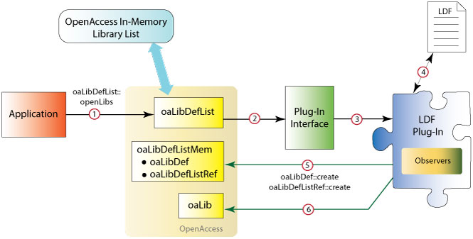
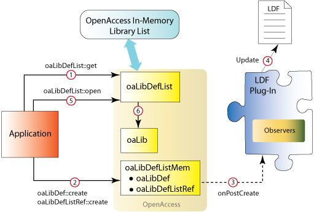
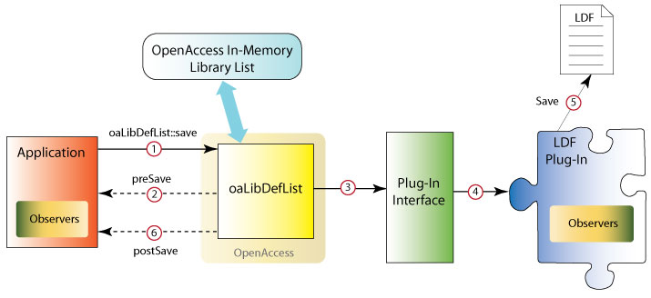

|
 |
 |
||||||
|
|
|
||||||
This document describes
For general information about creating plug-ins, refer to How to Write a Plug-In.
OpenAccess uses library definition files to establish a mapping between a logical library name and a physical file system pathname to that library. OpenAccess provides a default plug-in that manages the interactions between OpenAccess and library definition files. A plug-in developer can create an alternative library definition file plug-in that extends the syntax or symantics of the default OpenAccess plug-in. OpenAccess provides the infrastructure and plug-in interfaces for this purpose.
OpenAccess interacts with a library definition file plug-in through APIs and the ILibDef plug-in interface.
The following example shows an application calling oaLibDefList::openLibs to open all the libraries in the specified library definition file. The plug-in interface provides the infrastructure for the interaction between the application, OpenAccess, and the plug-in.

In addition, an application can call the oaLibDefList APIs to interact with the library definition file through the plug-in. The following example shows an application getting a pointer to an existing oaLibDefList, adding an oaLibDef and an oaLibDefListRef to that list, then issuing the oaLibDefList::open command:

And here is a sample flow for an application calling oaLibDefList::save:

Before starting this project, you might want to read How to Write a Plug-In, which is a more generic document describing the general concept of plug-ins and how they work.
You can create a library definition file plug-in by creating a shared library that is loaded by OpenAccess at runtime. The shared library must do the following:
In addition, you must Create a plug-in registration file.
OpenAccess provides the oaCommon::Factory<T> templated class for defining a factory object for a plug-in. The factory object is used to create instances of a plug-in. Each plug-in has a classID, which is stored in a factory table. When OpenAccess needs to create an instance of a plug-in, it uses the classID to find the factory for the plug-in. For more information about creating a plug-in factory, see Understanding the Plug-in Factory in How to Write a Plug-in.
You must also implement the getClassObject entry point function. When called, this function returns a pointer to the plug-in factory. For more information about implementing the getClassObject entry point function, see Implementing the Entry Point Function in How to Write a Plug-in.
To create a library definition file plug-in, you must define a new class derived from the PlugInBase<ILibDef> class. The new class must implement all virtual functions of the ILibDef class. Refer to the API documentation for ILibDef for a detailed description about these virtual functions.
The plug-in registration file registers the plug-in shared library. The registration file can be installed in $(OA_HOME)/data/plugins when the plug-in shared library is installed. Alternatively, the OA_PLUGIN_PATH environment variable can be used to reference a .plg file outside of $(OA_HOME)/data/plugins. Refer to Writing the Plug-In Registration File in How to Write a Plug-In for more information.
OpenAccess always uses the oaLibDefSystem.plg file to locate the library file plug-in to use. It points to a second file called oaLibDef.plg that refers to the default library definition file plug-in for OpenAccess (liboaLibDef.so). A different library definition file plug-in can be specified with these two files.
A plug-in is a shared library that is installed in the OpenAccess installation hierarchy in the $(OA_HOME)/data/plugins directory. Applications load the plug-in at runtime to select a customized implementation. The following describes the steps for creating a plug-in.
extern "C" long
getClassObject(const char *classID, const Guid &interfaceID, void **ptr);
long
getClassObject(const char *classID,
const Guid &interfaceID,
void **ptr)
{
return FactoryBase::getClassObject(classId, interfaceID, ptr);
}
class myLibDefPlugin : public PlugInBase<ILibDef>,
PlugInBase<ICompatibility>,
private oaObserver<oaLibDefListMem> {
public:
virtual oaLibDefList *open();
virtual oaLibDefList *open(const oaString &filePath,
oaBoolean openReferences);
virtual void save(const oaLibDefList *libList);
virtual void saveAs(const oaLibDefList *libList,
const oaString &path);
virtual void getDefaultPath(oaString &defaultPath);
virtual void getDefaultFileName(oaString &filename);
virtual oaBoolean hasPath() const;
virtual oaBoolean hasWritePath() const;
virtual void getLibPath(const oaLibDef *libDef,
oaString &libPath);
virtual void getLibWritePath(const oaLibDef *libDef,
oaString &libWritepath);
virtual void init(ILibDefAccess *libDefAccess);
static IFactory *getFactory();
static const oa::oaString &getComponentName();
virtual long queryInterface(const Guid &idIn,
void **iPtr);
};
virtual bool validate();
class myLibDefPlugin : public oaCommon::PlugInBase<oaPlugIn::ILibDef> {
.
.
.
private:
static
oaCommon::Factory<myLibDefPlugin> myFactory;
};Factory<myLibDefPlugin> myLibDefPlugin::myFactory("myLibDefPlugin")
myLibDefPlugin.plg with the
following contents:
<?xml version="1.0" encoding="utf-8" ?> <plugIn lib="myLibDefPlugin"/>The registration file can be installed in $(OA_HOME)/data/plugins when the plug-in shared library is installed. Alternatively, the OA_PLUGIN_PATH environment variable can be used to reference a .plg file outside of $(OA_HOME)/data/plugins. Refer to Writing the Plug-In Registration File in How to Write a Plug-In for more information.
<?xml version="1.0" encoding="utf-8" ?> <plugIn treatAs="myLibDefPlugin"/>
Return to Programmers Guide topics

Copyright © 2001-2010 Cadence Design Systems, Inc.
All rights reserved.